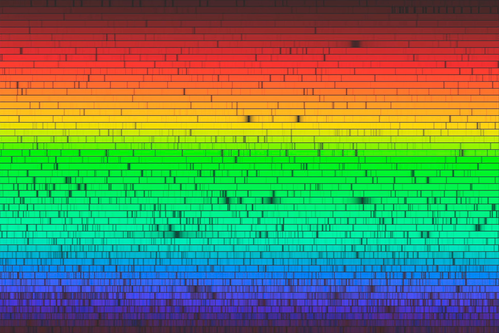

полный текст книги:
Ничто и Точка (предисловие)
Цель
Созерцаемое
Сущность
Сознание
Двухаспектная Сущность
Четвертое измерение и ...
Общество и Человечество
Пятое измерение и ...
Первовозникновение
Акт "Я"
Процесс изучения Акта "Я"
Смысл Бытия
Развитие Сущности
Коллективная реальность
Система развития Сущности
Эхо (отражение)
Реальный аспект Глоб. "Я"
О мировоззрении
Пространство-время
Осношение к Себе
Отношение к своему телу
Лень
Страх
Надежда (Ожидание Чуда)
Адаптация
Тождество личности
Отношение [Рассудок|Тело]
Свобода Воли
Трудная проблема Сознания
Неразличимость и идентичн.
Материя
Гносеология
Эпистемология
Разделение
на главную страницу сайта
— глава тридцатая —
————————————————————————————
————————————————————————————
ТРУДНАЯ ПРОБЛЕМА СОЗНАНИЯ
Всегда хотелось ответить на некоторые, простейшие по содержанию, но невероятно каверзные вопросы. Наиболее сложные из них выходили за рамки наших возможностей, однако, не по причине неспособности рассудка, но именно из-за отсутствия важнейших (промежуточных) данных;
Для тех кто не читал наше исследование с самого начала, сложнее окажется не “Суть ответов”на эти вопросы, а осмысление и принятие ‘Условий’, позволяющих взглянуть на проблемы иначе, или практически ‘изнутри’. Поэтому, мы настоятельно рекомендуем избежать недопонимания при постижении смысла, и изучить прежний материал;
Здесь обсудим проблемы, которые, до сей поры являются, скажем так – ‘злободневными для философского социума’. Многие вопросы содержат особые странности для самих же ‘искателей Истин’. Выдумываем вопросы, и сами их решаем, при этом мы не стесняемся открыто утверждать о трансцендентной Сути проблем, но исследуем и находим ответы. Напрашивается смешной вывод о справедливости утверждения: «Мы не в состоянии мыслить и рассуждать о «вещах», которые навсегда останутся непостижимыми». Следовательно, Вопрос о ‘непостижимом’? таковым не является, иначе – мы не смогли бы даже сформулировать его должным образом. Это не зависит от простоты слов в вопросе – в любой форме изложения понять его было бы невозможно. Дело однако, не в определенности будущего, а в «Системной ошибке» содержащейся в Сути (и смысле) предполагаемого вопроса, но невозможно задать вопрос, на который нет ответа. Следует понимать, что даже при «адекватно поставленном вопросе» – ответ на него, может не понравиться. Часто реакция зависит от текущих планов и действий исследователя, на которые он вполне вероятно потратил годы, но ответ просто разорвал всё это в клочья;
Что значит быть кем-то? - существом отдельного вида.
Это известная Проблема с Летучей Мышью, о которой мы и поразмышляем (…без ссылок, цитат, и прочей критики);
Если вникнуть глубже, до индивидуальности человека, его персоны с субъективными взглядами на жизнь, и прочими деталями, тогда согласимся с неспособностью понимать – Что значит быть другим человеком? ...не говоря о мыши. Представить Себя другим человеком, окажется на порядки сложнее, то есть - абсолютно невозможно, нежели летучей мышью, по причине ‘на порядок превосходящего’ уровня развития рассудка и умственных способностей. Или, пусть подопытный окажется полнейшим идиотом – разве такое получится представить? Нет. Другим человеком “пока” не получится (это “пока” – оставим на предположение будущих технологий, позволяющих посмотреть на Мир не своими глазами). Однако, разве мы исследуем не это же самое? Что значит быть Кем-то летающим? – полететь во сне. Тоже самое испытать на себе и практику эхолокации. Для этого придется специфическим образом сосредоточиться;
Но, Бытие Кем-то, можно развернуть чисто психически, и более полно, без названия вида. Предположим, одинокое существо развившееся на необитаемом острове. Здесь есть растения, однако нет никого самостоятельно активного, то есть, сравнить Себя не с кем (и некому противопоставить). Следовательно, в этой обстановке, обладающее рассудком существо, сможет идентифицировать Себя в Чистом виде, относительно того, чем оно питалось (допустим, бананы); Предположим, существо не сможет разработать Систему категорий, но если наступить на банан, и это непременно произойдет, он превратится в кашу, но если наступить на «Это» (свой палец), становится больно – в этом существо разберется. Посредством боли, и других чувств, рано или поздно, существо сделает заключение, позволяющее четко определять, отличать «Себя» и «Не Себя», что в принципе является Самоидентификацией [ «Я» ], это Акт осознания «Бытия Кем-то», т.е. «Самим Собой». Процесс ускорится благодаря собственному отражению в воде, и посредством внешнего исследования тела – изучения Самоустройства;
Теперь представим аналогичную обстановку (Остров), но есть осы, которые <по причине их беспокойства> кусают, и очень больно. В данной ситуации, осознание уже будет происходить быстрее, потому что осы самостоятельны и довольно активны – могут питаться своими собратьями, и совсем не похожи на предполагаемое существо. Активное поведение ос – послужит катализатором более адекватной квалификации подопытного существа в отношении Себя. Кроме ос, можно поселить на Остров кроликов и питонов, это создаст более четкий контраст, и ускорит осмысление. Еще более полноценный и качественный результат будет в среде нескольких подобных существ, рождение детей и так далее, мы можем усложнить эксперимент до уровня в текущем состоянии Мира, тогда вплотную приблизимся к осознанию – Что значит Быть Кем-то? (от своего лица);
«Бытию Самим Собой» – необходимо еще и научиться;
Рассмотрим Бытие Кем-то, от третьего лица. Например, Что значит быть Летучей мышью? – прежде всего мы уточним, что речь о «Квалиа», как субъективном восприятии «Летучей мышью» Её Жизненного Процесса. Представим самым поверхностным образом, что – это в общих чертах: «уметь летать в тесной обстановке, огибая препятствия не сталкиваясь друг с другом, слышать звук своих сородичей и взмахи крыльев ночных мотыльков, уметь добывать еду – жирных ночных бабочек в полной тьме, быть достойной своего потомства и звания – ‘Великой Летучей мыши’» :);
О слуховых способностях летучих мышей: Летучая мышь использует эхолокацию высокочастотных звуков. Ультра-звуковой писк, издаваемый летучими мышами находится в диапазоне до 200 кГц. Если изучить человеческий слух, то и мы используем так называемую эхолокацию, которая и есть «обычный слух», однако, у мышей эта способность развита на порядок лучше. Летучие мыши «пищат» очень тонко и улавливают отражения от объектов, – как своих собственных звуков, так и звуков издаваемых сородичами;
Человек тоже слышит отраженные звуки, и если ‘убрать (!) все отражения, мы ощутим себя оглохшими на плоскости, в какой-то степени, то есть совсем глухими’. Удивляться особо нечему, необычным «феноменом эхолокации летучих мышей» запросто можно пренебречь, по большому счету, это вовсе не то, что мы не в состоянии понять представив присущим нам свойством. Мы, разумеется, не отрицаем великолепие слуха Летучих мышей, но это не преграда, и не барьер для воображения. Кое что мы же способны представить;
Следовательно, «Бытие Летучей мышью», как наиболее важный философский вопрос, не превзойдет по важности вопрос: Что значит быть Слоном? – Ведь у них же хобот!, то есть, мы поставим во главу угла ‘проблему’: Как же мы смогли бы представить – активные действия собственным носом? …жить в джунглях с таким носом. Носом таскать бревна, и отгонять им насекомых. Извечный вопрос? –42. Это просто удивление, не критика и насмешка, но можно ли добиться успеха в попытках научить общаться мышей с дельфинами? – коли они «пищат» в одном диапазоне. Однако, не нам ставить «Глобальные вопросы» и придется отвечать, покуда считается невероятно важной проблемой;
Многие исследователи, действительно серьёзно начинают думать о важности конкретного вопроса о мышах, слонах, мухах, но суть в субъективности чувственного восприятия (Квалиа), это и влияет на интерпретацию и квалификацию объектов, и тем более атрибутов, свойств, а в связи с этим феноменом и на отношение ко всем ситуациям (и к Миру). Мы продолжим поддержку ‘Идеи примеров с мышами';
Согласно Ультра-идеалистической модели Мира, известно что «Реальный аспект Сущности» читает волну каждого Существа и это объясняет ‘Фактическую Причину Жизни’. Именно жизнью, то есть «Жизненной Искрой» <«Я»>, нас наделяет «Глобальный аспект Сущности» – предоставляя нам эту возможность через «Реальный аспект Сущности». В связи с этим, возникает относительность к «Сознанию» (Воздействие Присутствием) и одновременно с возникшей относительностью – «Сознание» реализует Пространство (и: Пространство – Есть относительность к Сознанию);
Последовательное исследование определит Пространство первичным, а уже затем возникновение относительности к Сознанию. Но, чтение «Сущностью» – Сути конкретного cущества, т.е. ‘Его волны и содержащегося в ней опыта’, это проявление возникающее мгновенно, и время в данном проявлении, оказывается именно чувственным контентом в пределах Пространства, то есть, в условиях реальности. После этого момента рассудок уже становится доступным, поэтому у Существа появляется возможность осуществить Акт Самодостоверности и осознать «Собственное Бытие»;
Здесь, и утверждение Томаса Нагеля подтверждается, что Иметь доступ к Сознанию означает Быть Кем-то, в том числе и Летучая мышь, не является особым исключением, но мы <не Бог>, не обладаем способностью чтения волны;
Что касается субъективной апперцепции при способности улавливать ультразвук, то необходимо отметить – любое восприятие исключительно субъективно и вовсе не важно, мышь это с эхолокацией, слон с хоботом, или же человек – не имеющий, ни того, ни другого. Мир каждого живого существа изолирован. На данном этапе развития кажется невозможным воспринимать ‘Чужой Мир’, используя при этом свой собственный человеческий рассудок. Допустим, «микро-чип» <– в недалеком будущем, кстати –> который вероятно позволит видеть глазами мыши, или же видеть используя её мозг, но возможно ли использовать рассудок мыши? Он есть, разумеется (и наверное примитивный, по сравнению с человеческим), иначе она не смогла бы жить и существовать, проявляя самостоятельную активность, но для ‘адекватного суждения - с позиции мыши' необходим её (мыши) рассудок и опыт. Пришлось бы изучать во всех аспектах, и характер мыши, наверняка он есть :), и прочие специфические особенности – мы думаем их очень много;
В заключение, необходимо сделать утверждение, – Чтобы понять «Что значит Быть Летучей мышью?» – придется, либо, Быть Богом, или непосредственно Летучей мышью, и иного не дано, кроме представления, – вполне вероятно приближенного (с помощью науки), но не «адекватного»;
Быть может когда-то, в будущем найдется способ доступа к Сознанию, в смысле к контенту хранилища опыта, если таковое вообще существует, и кроме этого нужен декодер для возможности чтения волны. Сейчас мы ничего об этом не знаем, как и не обнаружили метод передачи данных, из Сознания в «адрес» конкретного Рассудка. Однако, всё это может оказаться бессмыслицей, потому как возможно, что весь контент опыта возникает мгновенно и существует без необходимости хранения, а затем просто исчезает – что и переживается нами как ‘время беспрерывной активности’ (бодрствования), от момента пробуждения до следующей 'фазы глубокого сна’;
Как бы то ни было – если прочитать волну Летучей мыши, или любого другого существа, выступая в качестве, либо аналогично, как это делает «Реальный аспект Сущности», тогда «кто-угодно» станет Летучей мышью. Но, не будет помнить этого эксперимента и, “уже чужих намерений”, как и данных, доступных в «Опыте конкретной Мыши» – содержащем, в том числе Суть Её Самоидентификации, и историю и весь запас памяти мыши, включая возможности рассудка и ‘ума’ (если он есть), знаний, эмоций, ситуаций, а также извлеченный и из них опыт. Если потом и удастся вернуться, то обнаружится что опыт мыши не сохранился;
* * *
Итак, продолжим исследование «Квалиа» (субъективного восприятия). По причине мировоззрения, т.е. специфики Ультра-Идеалистической модели, мы объясняем данный «феномен» довольно просто и связываем именно с полной изоляцией Мира каждого существа. Реальность, в таких условиях, хоть и коллективная, однако, созерцается индивидуально <в одиночку>. Ситуации формируются из субъективного опыта и, усредняются в абстрактном 'объективном поле’, синхронизируясь с реальностью каждого участника (если они имеются), извлекаясь как новый субъективный опыт;
Цвет «объекта» является «его» атрибутом, который в свою очередь, субъективен. Увидеть, либо выяснить настоящий цвет объекта – в созерцаемом фрейме реальности другого участника ситуации – абсолютно невозможно. Мы можем ‘верить респонденту на слово’ получая ответы на вопросы о восприятии видимых им цветов, и прямого соответствия каким-то стандартным паттернам (пусть очень точные по его мнению), в любом случае – они будут иметь исклю-чительно тональное сходство, и то не очень точное. Какой оттенок и какого цвета, видит респондент на самом деле? – установить невозможно (как бы ни казалось). Допустим, какой-то объект красного цвета. Респондент говорит: это красное, хотя видит синее, и называет красным. С детства его так научили, указав сказали: Это красное! После чего, всё что видит синим – называет красным. Быть может этот респондент путает названия всех цветов?, но, это никак не проверить. Вероятнее всего, каждый человек видит цвета исключительно по своему – субъективно. Так странно :);
Мы подошли к «Сути Проблемы Квалиа» – субъективные атрибуты не сравнить, и не установить их фактическими, но «Проблемы» в этом нет, либо она не сформулирована, или, быть может, «Она» и понимается тоже субъективно? Предлагаем поставить Проблему, как Задачу с Вопросом: Какими именно мы видим цвета? Как, то есть посредством чего + для чего или почему, реализуется данный феномен? Комплексный вопрос, на который непременно есть ответы с позиции исследуемой Ультра-Идеалистической Модели;
Предположим ситуацию в которой есть «зеленые огурцы», но в данный момент мы отвернулись в другую сторону, и наблюдаем за действиями садовницы. Когда повернемся обратно и опять посмотрим на огурцы, то они снова будут зелеными, но уже согласно условиям, по которым ничего не происходило, из того, что могло кардинально изменить цвет огурцов на черный или желтый, например. Известно, что они могут быть желтыми, при недостаточном поливе, или потому что перезрели, и могут быть черными, если их покрасить, …либо воздействовать огнем газовой горелки;
Изначально, цвет огурца имеет исторические корни, когда <абстрактно> – 'человек впервые с ним столкнулся’. После объективного закрепления цвета огурца именно 'зеленым’, это передается ‘от поколения к поколению’ но фактически закрепилось на уровне «Сознания», в качестве стабильной волны и свойства огурца. Зеленый цвет, в таком случае не является статичным, и предлагается как название ‘общего цвета’ для растений, в составе которых, при детальном их исследовании обнаруживается т.е. реализуется хлорофилл;
Механизм реализации эфемерных образов и иллюминация частиц, в случае с огурцом не отличается от всего прочего и «Сознание» реализует огурец как Идею, в этот момент к нему применяются определенные условия, от которых и зависит его текущее состояние, в том числе цвет – обычно он ‘зеленый’, но выглядит субъективно – ‘в цвете огурца’. В сфере виртуального пространства, объекты реализуются посредством чувственного восприятия светящихся точек, мы называем это шоу ‘иллюминация частиц’ – именно эти «Созерцаемые Частицы» изучает наша наука «Физика», а всё иное, является статичным, и имеет волновую природу. Это рассуждение касается лишь «Квалиа Цвета», со всеми другими атрибутами следует рассматривать в ином ключе – свойственном другим методам восприятия и реализации реальности, то есть в ультразвуковой передаче есть некая специфика, вполне возможно Летучая мышь реализует Её Пространство крайне специфически, с объектами, данные которых представляются (как основание) не так, как у нас через «Фотонное Эхо», а через «Звуковое Эхо». Принцип одинаков, но – с ‘нашей позиции’, скорость работы такого механизма должна бы в ~875.000 раз уступать, привычной нам ‘Световой схеме’ (возможно, это не просто доказать);
Теперь нам необходимо разобраться с предназначением и причинами, по которым, почти все объекты имеют цвет, и прочие атрибуты. Некоторые животные меняют окраску, быстро маскируясь, под цветовую гамму окружающей их обстановки – они используют цвет в целях защиты, и для внезапного нападения на жертву. То есть, столь огромный бонус в подарок – невозможно оставить без внимания, при рассуждении на данную тему. Да, конечно, можно просто усмехнуться и сказать – это умение развивалось несколько миллионов лет, и не имеет даже малейшего отношения к Сознанию, особенно при исследовании ‘феномена Квалиа’. Эта <ожидаемая> реакция, не лишена небольшого смысла, по причине разности в мировоззрениях, и приверженности большинства людей к Материалистической модели Мира;
Но, мы полагаем что столь длительное формирование этой особенности управления окраской, возникает по причине реализации оснований, также как Странный Куб (стр. 92) явившийся по причине необходимого содержания свертка. “Ученые недалекого прошлого” утверждали, что собака не может различать цвета, позже они отказались от этой идеи и стали утверждать о конкретных, либо некоторых цветах, которые собака видит совсем иначе, …т.е. не как человек. Что значит быть собакой? Зачем нам гадать о ‘Квалиа’? – если Учёным и так всё известно :). ...Но, мы продолжим исследовать, с надеждой обнаружить что-либо интересное и полезное (кроме того что они обнаружили), для развития важна любая ‘мелочь’, а в этом деле нет никаких мелочей. Чтобы обеспечивать этот процесс нам (каждому существу) надо поддерживать не только свою жизнеспособность, но и преумножать численность популяции – включая охрану и заботу о своей жизни, и о безопасности соплеменников;
Маскировочный окрас животных имеет прямое отношение к развитию – обеспечивает функции защиты, нападения, и привлекательность для сексуального партнера. Каждый из этих важных аспектов усилен цветом от которого зависит эффективность действий, и их должная результативность;
Цвет растений. С одной стороны – это привлекательность в качестве пищи, для очень многих существ (травоядных, или всеядных), с другой стороны, все растения стремятся расширять ареал вида – через привлечение животных они будут съедены и, таким образом, с испражнениями семена (или споры) перемещаются на значительные расстояния;
Многие растения, напротив, имеют маскировочные цвета, сливаются с окружающими их, другими растениями, и не желают быть съеденными – в целях сохранения текущего положения, расширения, укрепления на конкретном месте. Так или иначе, как выясняется – всё связано с Развитием;
Цвет неживых объектов базируется на фундаментальной парадигме, с обобщением «Мир для живых», которую мы ‘наблюдаем в моменте’ «Первовозникновения» (стр. 76). Расцветка некоторых объектов служит прикрытием, и она такая именно потому что рядом обитают животные, либо иные существа нуждающиеся в прикрытии, окрас которых совпадает с окружающей обстановкой, или они способны к ней приспособиться. Объекты (‘элементы окружающей среды’) своим цветом образуют чувственную гармонию, и способствуют отдыху, расслаблению …и даже творчеству;
«Реальный аспект Сущности», читающий волну каждого конкретного существа – воздействует на Сознание таким образом, чтобы «контент реальности» соответствовал его уровню развития, для создания возможности извлечения, именно своевременного, потенциально доступного опыта. Это можно заметить, если посмотреть на археологические артефакты, которые значительно проще было обнаружить 1000 лет назад, но этих находок и вовсе не существовало – они реализованы именно тогда, когда стали необходимы. Также и исторические факты, обнаружены во времена их максимальной актуальности, и только как компонент для развития, в каких-то, возможно и не всегда понятных нам аспектах, но мы всегда находим то, что ищем с искренним интересом (“Просите, и дано будет Вам; ищите, и найдете; стучите, и отворят Вам; ибо всякий просящий получает, и ищущий находит, и стучащему отворят”. От Матфея 7:8);
«Квалиа» (субъективное, индивидуальное) – это один из самых ярких очевидных признаков наличия, и изоляции, «Собственного Мира», потенциально у каждого существа. Как и конструкция Мира в целом, индивидуализм служит возможности извлечения уникального <и субъективного> опыта, в целях ‘Бесконечного развития Вечной Сущности’ (обратное выглядит тавтологией, однако это именно так);
В заключение по вопросам принципа, то есть технически – “Как реализуется цвет?” Определим следующее: не важно, как и где видим (созерцаем) – любое созерцаемое является иллюминацией частиц. Когда мы начинаем делить «вещи» на части, явленное созерцается не иначе, но именно также. Следовательно, сам ‘принцип созерцания цвета’ не входит в компетенцию метафизики. Мы считаем, что этот вопрос относится к предметам нейронаук. Если все созерцаемое – есть иллюминация частиц <имеющих свойство делиться>, то и – каждый цвет вызван соответствующими частицами, и это исключительно в условиях реальности. Иначе, всё есть волна, содержащая конкретный опыт в очень сжатом состоянии (в бесконечно сжатом) и ‘цвет огурца’, в волне не может делиться, но может быть волна содержащая этот опыт – включающий метод деления частиц (и их деление);
При исследовании окружающего Мира (Compton, Arthur Holly; 1927) были обнаружены фотоны, которые (стр. 9), отражаясь от объекта,’ несут на себе информацию’ о Созерцаемом. Как будто в их составе, в поведении* (или траектории) есть нечто специфическое, что и позволяет транспортировать (доставлять) данные (или являться ими?), однако, сами фотоны при этом остаются невидимыми, и – этот факт говорит о том, что сами фотоны не являются данными, а выполняют роль носителя. Здесь и возникает вопрос: Почему, глядя на объект, световой поток от него, раскладывается в цветной спектр (состоит из конкретных цветов) и, при точном измерении – является уникальным?
*под поведением фотонов, здесь, мы подразумеваем фотонную волну, считая что фотонов и физических частиц не существует, мы видим именно сами данные (объект реализуется частями(?));
Допустим (на счет уникальности), это спектр конкретного объекта который уникален, потому не может совпадать с другим спектром. Он может быть подобным другому, но не может быть идентичным ему (если это два одинаковых с виду предмета, к примеру – две стальные пудовые гири). То есть, свет отраженный от объекта (и спектр), уникален в той же степени, что и сам объект. Из этого следует, что Спектр содержит информацию, не только о составе объекта и прочих характеристиках, но и о его форме. Если данные об объекте мы получаем исключительно посредством ‘носителей’, которые влияют на созерцание, тогда, и форма, цвет, и характеристики тоже содержатся в спектре, т.к. сам спектр есть ничто иное, как разложение света (излучения) на отдельные частоты через расщепление и ‘явление спектра’ – есть данные (пусть и в непонятном нам формате, но) – от «Сознания» –> в адрес «Реального аспекта», как потенциальный опыт (моего / вашего) «Я»;
* * *
Важно обратить внимание аудитории, это свет от любого источника, но – предлагаем рассмотреть именно Солнце, хотя разницы принципиальной нет вовсе. Не находите ли странность в том, что фотонов, и самого пучка света мы не видим? Проверить не сложно если смотреть на лучи со стороны – если воздух чистый, пучок света невидим, и мы знаем почему: Потому что Солнце (как и прочие объекты) не реализуется когда не находится в поле зрения (и точки сосредоточения), за углом, или за спиной, к примеру – мы уже знаем что реализуется исключительно необходимое. Кроме того, здесь не мало и других (важных) странностей:

рис. 20 / Спектр Солнца. Объем данных потрясает. /
Обратите внимание на возможности, на ‘алгоритмическую емкость’, которую видно невооруженным глазом. Имеется ввиду и объем данных, который можно поместить в столь замысловатую кодировку. Под операторами мы понимаем все компоненты данной картины, но они подразумеваются гигантским числом “процессов происходящих на Солнце” (ведь именно так мы это понимаем?). Однако, каждый из тех процессов не имеет ничего общего со случайностью, и содержит некий Алгоритмический Смысл, либо напрямую является данными предназначенными, возможно для всех людей (существ) проявляющих активность, или для одной Сущности, но обязательно извлекающей какой-либо опыт;
Здесь, мы который раз, пытаемся донести до аудитории о том что Солнце, как Эмиттер (светится красиво :) – транспортирует данные, именно поэтому мы Его видим, как по этой же самой причине мы видим любой источник света (и всех прочих частиц), которые мы используем в качестве Эмиттера «сырых данных», т.е. от Сознания;
Если данные доставлены частицами – мы понимаем, что они принадлежат последнему объекту, и не могут быть от прежнего, об этом мы рассуждали (стр. 137), как и о том, что все источники частиц – есть Единый Эмиттер;
Важный вопрос: Если мы получаем данные от объекта последнего отражения частиц – куда исчезли прежние данные? Мы видим огромный объем данных в спектре солнечного света, но, после отражения они в спектре уже не содержатся. В физическом Мире это аномалия, так как ничего просто так исчезать не может, но – это происходит. Ответ есть: он заключается в понимании того что прежнее содержание лучей (данные) необходимо лишь как одно из оснований факта созерцания объектов. Представим так: Cозерцаемый объект <– частицы (фотоны) <– причина частиц Солнце <– причина Солнца (в спектре+…) и т.д.
Реализуя один объект (в точке сосредоточения, внимания), реализуются все его основания, то есть, позиция объекта относительно других объектов в зависимости от ситуации. Это влечет за собой необходимость эмиттера, реализуется источник света (например, лампочка, Солнце, отраженный световой поток, который тоже имеет основание). То есть, Эмиттер выступает как основание для реализованных "вещей" и "событий". Объекты могут быть реализованы в темноте (если нет фотонов), тогда будут соответствующие основания, допустим электронное (тактильное ощущение) при касании поверхности предмета, или другое излучение, либо инфракрасное, когда объект может быть обнаружен с помощью тепловизора, и т.д.
Эти ‘Груженые Данными лучи’ мы видим созерцая любой объект, поэтому они и выглядят для нас в форме объекта. Кстати, если смотреть на объект через сильно запыленный воздух, то объект видится нечетким, очень расплывчатым, что подтверждает транспортировку данных, потому что данные о частицах пыли начинают преобладать и объект в принципе исчезает, так как недостаточно данных для его реализации. Мы конечно объясним согласно стереотипу – пыль препятствует видимости, с одной стороны это так, однако, с другой, под этим подразумевается и нечто иное.
Если мы видим возможности – Сущность их использует;
Кажется все очень просто – прямые лучи от источника видны, потому что содержат данные самого источника.
“Лучи от источника света являются только светом” –
до момента пока мы не проявили интерес и не приступили к исследованию, после чего, в спектре обнаруживается ‘соответствие вольфраму’ (если это лампа накаливания). Можно пытаться оспорить утверждение, противопоставив ‘исследователю источника света’(нам) –> ‘производителя электрических ламп’. Подобный аргумент не корректен по причине ‘полной изоляции Мира каждого существа’, не исключая исследователей и производителей, то есть лампа инициируется и реализуется в реальности посредством производителя, становится одним из объектов-участников -ситуации, и доставляется в потоке данных синхронизации другим участникам, которые и окажутся исследователями;
Итак – фонарь, и любой другой источник света, является одним из проявлений «Эмиттера», но если мы начнем Его исследовать, то получим всё то, что знаем, о производстве ламп и других осветительных приборов, по каким законам и принципам они работают, и что для этого необходимо. Но, при этом подобное исследование не будет содержать Сути о подлинном назначении лампы – мы изучим только созерцаемое, его причину и историю, которых до момента проявления интереса, и исследования, не существовало.
Да, мы как будто понимаем, что лампа нужна в качестве осветительного прибора, однако это необходимо как некое ‘требование от природы’ в целях развития – нашего, либо Развития Сущности (это одинаково), поэтому, не следует выдвигать проблему о нарушении свобод и эксплуатации;
Рассмотрим огонь в лесу, как источник света возникший в следствии удара молнии. Ночь, до возгорания была полная тьма, ничего не было видно, и вдруг – настолько активное наваждение созерцательной реальности. Явно, достигнув определенной точки опыта, «Сознание» меняет ситуацию на более содержательную (на практике извлечения опыта это отражается значительными изменениями). Мы можем представить что минуя зону освещенную огнем, включили фонарь (это наше право принимать решения) – однако, всё происходящее, ситуация в целом, кажется будто априори тесно связана с этим действием (включением фонаря), что становится понятно, но позже, или по истечении какого-то кульминационного момента. То есть, «Сознание», ‘любым доступным способом «включило свет» для осуществления определенного плана’, чтобы мы получили возможность извлечения ценного для Сущности опыта и приобрели его;
* * *
Вернувшись к сути вопроса о Квалиа, следует заключение, что причиной реализации субъективных свойств является необходимость развития. Это может выглядеть и косвенно влияющим на всех (или одного) участников ситуации, как фоновая, обычная расцветка зданий на улицах мегаполиса, либо привычного ощущения легкого жжения кожи лица от дуновения ветерка февральским утром, также и в качестве основных параметров, тогда цвет играет наиболее важную роль, когда от черных коней-родителей рождается совсем белый жеребенок (альбинос), например, или, ваш адвокат появился в суде, в желтом костюме с вульгарной тростью;
Сущность воздействует на Сознание таким образом чтобы ситуации были реализованы максимально эффективными, обеспечивающими возможность извлечения, как можно более разностороннего опыта. Динамично изменяющиеся параметры, атрибуты, и свойства объектов, значительно расширяют эти возможности. В этом весь ‘Смысл Квалиа’, то есть причина реализации цвета, температуры, и прочих, в том числе тактильных характеристик объектов. В двух словах: Квалиа (субъективность) является одним из самых важных Компонентов «Системы Развития Сущности»;
Кроме всего, следует иметь ввиду, что любые <свойства> частицы, с помощью которых реализуются, ощущаются и созерцаются объекты – это именно психический процесс, связанный с чувствами и отношениями, т.е. тепло, холод, живое/неживое, белое, черное, и цветное, в соответствии с ситуацией, и ролью объекта, в степени его важности или участия в каждой конкретной систуации;
читать следующую главу >> << назад